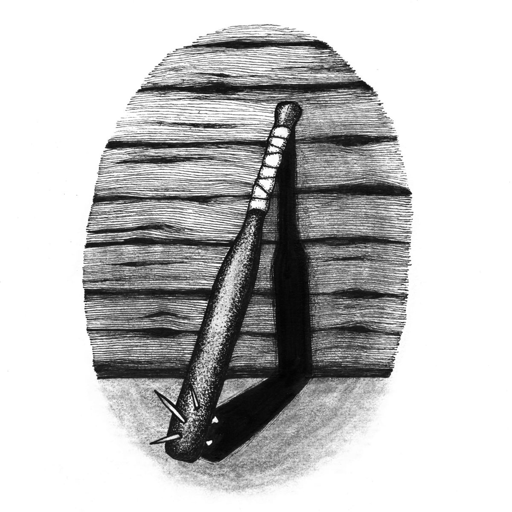

Karatehäxan
Karatehäxan tar emot på sitt rum längst ner i korridoren åt höger på Avdelning 34. Precis som resten av avdelningen tapetserades hennes rum spräckligt gult på nittiotalet, då det ansågs ha en lugnande inverkan på de inlagda. Hennes blick är lite grumlig men hela tiden intensiv och fokuserad, även om den sällan verkar fokuserad på en punkt inne i rummet — eller för den delen de tre dimensioner det sträcker ut sig i.
Hennes föräldrar var de första som upptäckte — eller snarare utsattes för — hennes övernaturliga förmågor. Långt innan hon lärde sig prata klottrade hon med pennor och kritor på allt hon kom över. Inget konstigt med det, men till skillnad från andra barn som bara åstadkommer okontrollerat kladd så var det uppenbart att hon från första gången hon greppade en krita försökte härma bokstäver. Korta streck, små bågar och prickar. Först slumpmässigt, men snart utvecklade hon primitiva glyfer. Fjorton månader gammal skrev hon ”KUK” med en svart krita på den grönrandiga tapeten i köket.

Hon beskriver själv perioden efter gymnasiet som ”stökig”. Först efter ett par år lyckades hon hitta en balans och drev under en tid en butik i Gamla Stan som sålde ockult krims-krams, främst till turister och unga sökande flickor som dem hon själv umgåtts med under gymnasietiden.
©2018 Thomas Birgitta Pärsons